Pixenate™ is a customizable photo editor which comes with a set of example themes which you can copy and modify to suit your own website's identity. The sample themes are available in the themes subdirectory.
Pixenate™ also comes with a Javascript Library which you can use to build your own custom photo editor from scratch. In this section I am going to show you how to create a simple photo editor with some bare-bones functionality. The goal is to illustrate how to use the Pixenate™ Javascript library and also how to customize the appearance of the editor using CSS.
Let's begin by creating a very simple photo editor - one that does just one thing; Rotate photos.
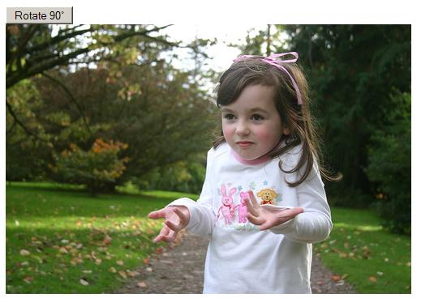
When the user clicks the Rotate 90° button, the photo will be rotated through 90°...
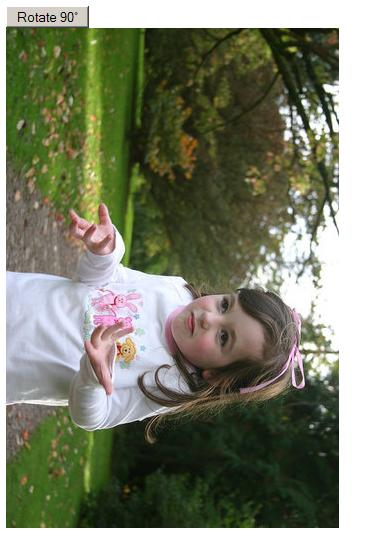
The user can repeatedly click the Rotate 90° button and the photo will rotate another 90°...
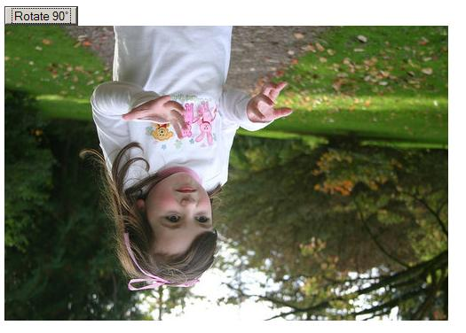
You can see that in each screenshot the photo has been rotated progressively. Each operation is applied to the photo incrementally. Here is the source code for this simple photo editor...
| view plain | see example |
You can see this example photo editor in action by clicking here.
Lines 4 to 5 are all of the Pixenate™ javascript source files which must be included in the <head> section of your web page. Pixenate is designed for easy translation, so all of the English text used by the Pixenate Javascript library is defined in pxn8_strings_en.js. If you wish to translate Pixenate into other languages, create translations for all of the constants defined in pxn8_strings_en.js and save them to your own language file (e.g. pxn8_strings_es.js for Spanish) and include that file instead.
Line 8 is a button whose onclick handler will call PXN8.tools.rotate(). PXN8.tools.rotate() is a Pixenate javascript function which rotates the photo. It takes a Javascript Object as a parameter - the object in this case is an Object Literal ...
{'angle': 90}
... with an 'angle' property whose value is 90. The
PXN8.tools.rotate() function's single parameter can have any
combination of the following properties...
Line 11 is very important. This is where the pxn8_canvas DIV is defined. To create a Pixenate™ Editor, your web page must have a DIV with an id of pxn8_canvas. PXN8.intialize() and many other Pixenate functions use the pxn8_canvas DIV to manipulate the photo. pxn8_canvas is a special DIV used by Pixenate and must appear in all Pixenate editor pages.
Lines 13 to 15 are required to initialize the Pixenate™ editor. This block of javascript should appear after the pxn8_canvas DIV has been declared. PXN8.initialize() can take a single string parameter which is a relative URL of the image to edit.
This is a trivially simple example Photo editor. A photo editor which only allowed you to rotate a photo wouldn't be much good, but it does illustrate the bare minimum you need to integrate Pixenate into your website...
In the next sections we'll expand on this simple editor and explore more of Pixente's customization features.
So far our simple photo editor doesn't do a whole lot. The user can rotate the photo and - if they're savvy enough - can save the photo to local storage by right-clicking on the photo and selecting 'Save Image As...' (in Firefox) or 'Save Picture As...' (in Internet Explorer).
Fortunately, Pixenate™ provides an easy way to save photos to the client's local storage using the PXN8.save.toDisk() function...
| view plain | see example |
Here I've introduced an additional line. Line 23 is an additional button which will call PXN8.save.toDisk() when clicked. If the user clicks the 'Download...' button without first having modified the photo, a message will appear briefly beneath the photo 'You have not modified the photo!'. The PXN8.save.toDisk() function will only save modified photos.
The message which appears beneath the photo is another special DIV used by Pixenate™. This DIV is for warnings and information and it appears whenever the user changes a photo or performs an operation which was not appropriate. This DIV (which does not need to be defined manually - it is added automatically to the page by Pixenate™) has an id of 'pxn8_warning' and it can be styled to suit your own tastes by adding something like the following to your page's <head> section...
view plainHere is the result of the styled pxn8_warning div...
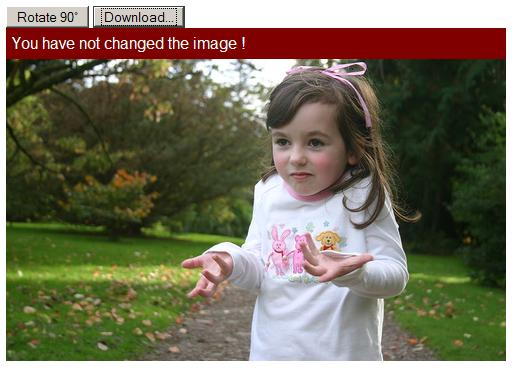
When you click the Rotate 90° button a mesage will appear at the bottom of the photo...
Updating Image. Please wait...The text of this message can be changed by modifying the PXN8.strings.UPDATING constant which is defined in the pxn8_strings_en.js file.
If you want to translate Pixenate™ then you should create your own pxn8_strings_**.js file e.g. pxn8_strings_es.js for spanish, pxn8_strings_ko.js for korean, etc. and replace all of the PXN8.strings.* constants with suitable values.As well as changing the content of the message, you can change how it is displayed by styling the special pxn8_timer DIV which is displayed whenever the photo is updating. For example, to style the pxn8_timer so that a countdown animated gif is displayed at the top of the photo, add the following to your web page's <head> section... view plain
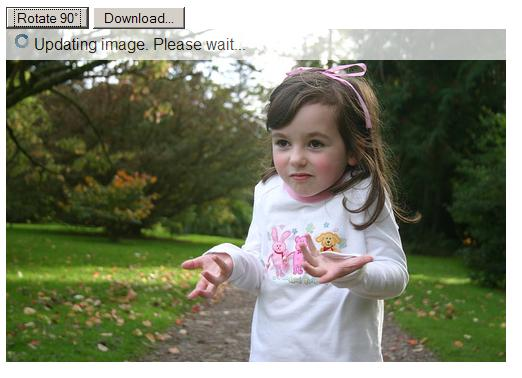
Once the photo is updated and the user clicks the 'Download...' button, a request is made to the save.pl script on the server and the photo is downloaded as an attachment.
N.B. The photo which is downloaded via the PXN8.save.toDisk() function is not the same as the photo which is downloaded when the user right-clicks on the photo and selects 'Save Picture As...' from the context-menu. This is because the photo in the browser is a 85% quality replica of what is stored on the server. Calling PXN8.save.toDisk() will always retrieve the full 100% quality version of the photo.
Now let's add a few more buttons and styling...
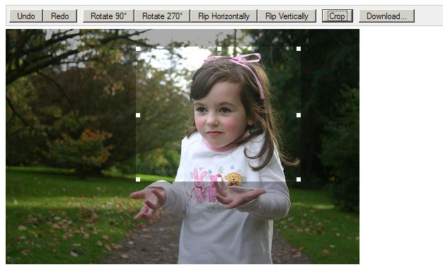
To make the buttons appear flush next to each other in Firefox, you must place the closing </button> tag right next to the following opening <button> tag. Internet Explorer ignores whitespace between a sequence of <button> tags but Firefox does not.
| view plain | see example |
Lines 3 to 22 contain some additional styling definitions. Lines 49 to 58 are of particular interest. The PXN8.tools.crop() function takes as its single argument and object with the following properties...
PXN8.tools.crop(PXN8.getSelection());... to automatically crop the photo to the current selected area. What the in-page doCrop() function (lines 50 to 57) does is check that the user has actually selected an area and if not alerts them. If an area is selected (checked by testing the width is greater than zero) then PXN8.tools.crop() is called.
One thing it would be nice to see is information about the current selected area (it's top,left, width and height) as it is selected. To do this I'm going to add a DIV to the page and a Pixenate™ Listener function.
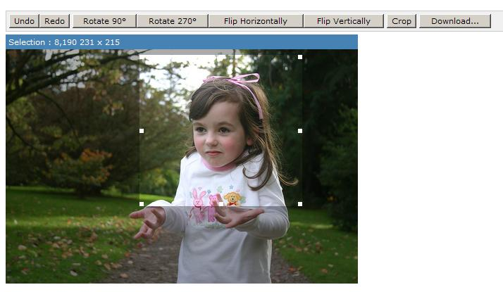
Here is the relevant source...
view plain... Line 1 is an additional styled bounding DIV added around both the new Informational area and the canvas. The styling prevents the informational area from exceeding the length of the canvas' width. Lines 8 to 13 are where I define and add a new listener for the PXN8.ON_SELECTION_CHANGE event. The function supplied as a parameter to the PXN8.listener.add() function will be invoked by Pixenate™ every time the selected area is modified (either resized or moved). The <script> block above could also have been defined like this...
view plainIn this case the function supplied to PXN8.listener.add() is not an anonymous function (as in the previous example) but a named function. Which approach you take to defining and adding listener functions in entirely up to you. All of the Pixenate™ listeners are described in the Pixenate™ API Reference.
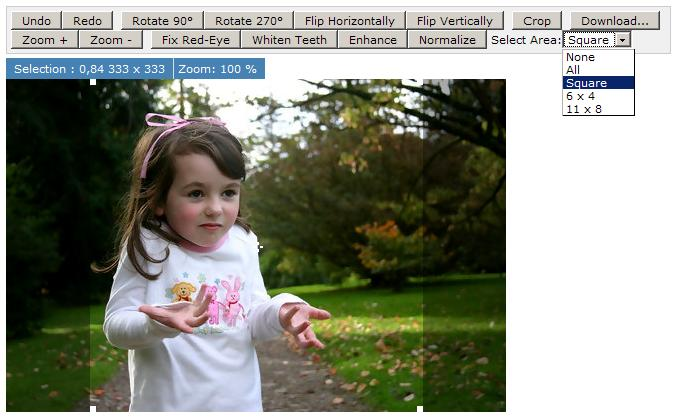
In the above screenshot you can see some additional buttons for enhancing, normalizing, fixing redeye, etc. At the bottom-left of the toolbar, there are Zoom + and Zoom - buttons for zooming in and out of the photo. What these buttons do is make the photo larger (zooming in) or smaller (zooming out).
view plainNext to the selection area, I've added a new Zoom information area which display the current zoom magnification. To do this I added a new DIV with an id='zoom_info' and added a listener for the PXN8.ON_ZOOM_CHANGE event. Here you can see calls to functions in the PXN8.zoom module. For a full list of PXN8.zoom functions please refer to the Pixenate™ API Reference.
Another addition to the page is the drop-down combobox at the far right which is used for making selections. This combobox will make calls to Pixenate™'s PXN8.select* family of functions whenever a change is made...| view plain | see example |
Line 4 declares doSelection() as the combo-box's onchange handler. Lines 12 to 24 are the doSlection() function body. This combobox lets the user pick from a selection of pre-defined aspect ratios - very handy if your users want to crop the photo prior to printing. Each of the PXN8.selectByRatio(), PXN8.unselect() and PXN8.selectAll() functions are explained in Pixenate™ API Reference.
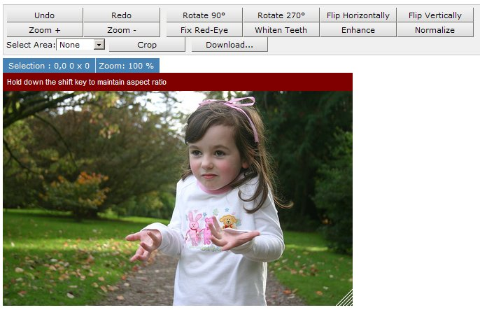
So far we haven't had to write too much event-handling code. One thing that would be nice is the ability to resize the photo but to do so interactively - i.e. by stretching the photo in the browser using a mouse 'drag' operation and calling PXN8.tools.resize() when the mouse drag is complete.
To do this, I've added a new DIV to the page (the resize handle that appears at the bottom right of the photo) and some javascript code to handle mousedown, mousemove and mouseup events...
| view plain | see example |
Much of the above code concerns positioning the resize-handle whenever the user moves the pointer, and changing the <img>'s width and height attributes accordingly.
N.B. Changing the IMG tag's width and height attributes in the browser is obviously not the same as resizing the actual photo but it does give the user at least some degree of feedback.The key line of code above is line 111 in the stop_resize function, which calls PXN8.tools.resize() to perform the resize operation. The following style is applied to the resize_handle DIV to give it it's appearance... view plain
Pixenate is a web-based photo editor which uses a combination of Javascript, CSS and HTML (otherwise known as AJAX) to provide an interactive user interface. Many desktop-based photo editing applications offer a way for the user to do freehand selections - that is - select any arbitrary shaped area on the photo and copy and paste the selected area. It is possible, using AJAX, to plot an outline of a cut-out by allowing the user to click on the edges of the area they would like to copy and paste or cut out entirely. This is achieved by prompting the user to click on the edges of the area to be cut out. When the user clicks on the photo, a tiny marker is left on the canvas, so the user can plot a rough outline.
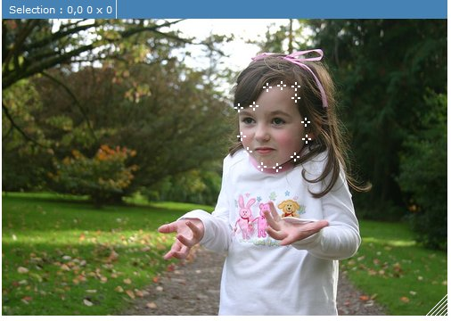
Once the user has completed plotting the cut-out, the next step is to create an Alpha mask of that cutout. This can be achieve by using ImageMagick's API which is exposed via the PXN8.ImageMagick object. The mask is then applied to the image to create an irregular-shaped Crop. The irregular-shaped crop can then either be pasted elsewhere on the photo (cloning) or used as-is. In this example, I will assume the user wants to clone part of the photo and paste it elsewhere on the same photo.
Step 1 is to provide a mechanism whereby the user can start the process of cloning. This is provided via a Clone button which will allow the user to begin plotting points.
Step 2 is to provide a way for the user to plot points on the photo. By default, when the user clicks on a part of the photo, it is assumed that they are starting a selection operation. I need to prohibit this default behaviour so that I can draw a marker at the clicked point instead and store that point in an array. I do this by calling PXN8.select.enable(false); This disables the default selection behaviour so that the user cannot select part of the photo. Then I add an event listener so that every time the user clicks on the photo, a new point is stored and a marker drawn (see add_point(event) )
It's also important that the points which are drawn on top of the photo are redrawn whenever the photo is zoomed in or out. This is achieved with PXN8.listener.add(PXN8.ON_ZOOM_CHANGE, redraw_points);.
When the user has completed plotting the points, clicking 'Copy' will call the copy() function (listed below). The copy() function doesn't update the current image but instead uses the changed image as an Overlay which can then be pasted elsewhere on the photo. This is achieved by calling PXN8.ajax.submitScript() rather than PXN8.tools.updateImage().
PXN8.tools.updateImage(operations) will always update the current image by applying the operations to the current image. PXN8.ajax.submitScript(operations,callback) however, will not update the current image, instead it is given a callback function which is invoked when all of the operations have been applied. That callback function can then do anything with the JSON response it is given. (see PXN8.ajax.submitScript() in the API Reference for more details).
| view plain | see example |
You might wish to constrain the size of the canvas area which pixenate uses for photo-editing. This is a good idea if screen real estate is limited or if you would simply like to have greater control over the layout of the editor page. You can see an example of a constrained canvas area in the Memphis theme. The screenshot below illustrates how the photo being edited will appear within a constrained (fixed size) canvas...
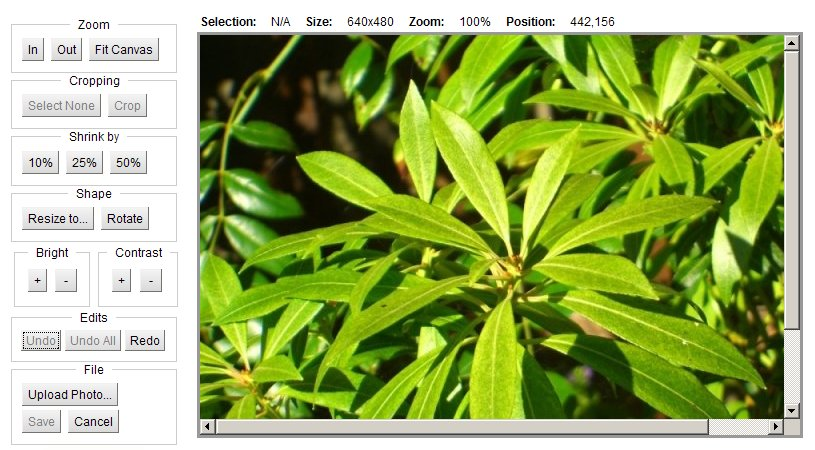
In the above example the image being edited is 640 x 480 pixels but the canvas is sized to just 600 x 400 pixels so that the image is clipped in the view pane. To achieve this, you must wrap the Pixenate canvas, inside a div with an id of 'pxn8_scroller'.
It is very important that the surrounding div has an id of pxn8_scroller as this is a special element recognized by the Pixenate javascript library.
If you purchased Pixenate software for install on your own webserver, then Pixenate stores the working image in a subdirectory called 'cache'.
For example... If you are using Pixenate with Microsoft's Internet Information Server and you are using the default IIS configuration you should have installed Pixenate in ...
c:\inetpub\wwwroot
... which means there will now be a pixenate subdirectory in that directory. Within the pixenate subdirectory there will be a cache subdirectory ...
c:\inetpub\wwwroot\pixenate\cache
... this is where working images used by Pixenate are stored. The javascript code for saving images permanently to the server is roughly the same regardless of whether you use PHP, ASP or JSP. The following javascript code is recommended...
| view plain |
The saveEditedPhoto.asp, saveEditedPhoto.jsp or saveEditedPhoto.php (or whatever you decide to call your cgi program) should be implemented for your specific website.
For example the following ASP code will save the supplied working image url to a more permanent location ...
| view plain |
To save the file permanently using PHP, you would use code similar to the following...
| view plain |
In the hosted edition, the working image is not stored locally on the customer website but on Sxoop Technologies' own servers. To save the edited image permanently you must first retrieve the image from the web and then store it on your own webserver's filesystem or database.
The javascript code for saving images permanently to the server is roughly the same regardless of whether you use PHP, ASP or JSP. The following code is recommended...
| view plain |
Because each customer stores photos differently we do not prescribe where photos should be saved.
The following snippet of java code demonstrates how you might save the remote image to your own local file system...
| view plain |
To save the remote file permanently using PHP, you would use code similar to the following...
| view plain |
Imagine a scenario where you would like to offer users a quick-fix solution to the most common problems affecting a user's photos. Most photos don't have ideal color balance (this can be rectified by PXN8.tools.normalize() ), can probably be improved by PXN8.tools.enhance() and most likely are under-exposed (particularly true of photos taken indoors with camera-phones).
You would like to offer your users a 'one-click' solution for these most common problems. On clicking the 'quick-fix' button the following operations should be performed...
... yet it should appear to the user as if this is a single atomic operation. To do so, three distinct operations must be combined into one...
| view plain |
...Now when the user clicks the 'Quick Fix' button, the photo will be normalized, enhanced and fill-flashed, although to the user it will appear to be just one operation.
As of version 1.3.2sp2, there is an even simpler way to accomplish this task. Use PXN8.tools.startTransaction() and PXN8.tools.endTransaction() to bookend the operations you would like to combine into a single atomic user operation...
For convenience, Pixenate comes with a CGI script for uploading photos. This script performs some basic checks to ensure that the file is in fact an Image. It also saves the file to the 'cache' folder, so photos uploaded using the upload.pl script will be automatically deleted after a defined period (see config.ini).
Use of upload.pl to upload photos is not mandatory. You can use your own upload tools. However if you would like to use the upload.pl script and integrate it with your existing website the following will be relevant to you.
The upload.pl script provided uses HTTP redirection to bring the user back to the page from which they started (or a page which you define) when the upload is complete. Typically your page (from which the upload was called) will have a number of parameters which were passed into it and which you would like to preserve when the upload has completed. For example, if your editor page has a user parameter...
http://YOURSITE/EditPhoto.php?image=dc003.jpg&user=TomC
... by default, when you upload a photo using the upload.pl script, the script will redirect to the following URL when the upload is complete...
http://YOURSITE/EditPhoto.php?image=pixenate/cache/0ced9.jpg
Notice that the user parameter has been dropped. To preserve the user parameter you need to pass it into the upload.pl script but prefix it with _ (that's the underscore character). Your form should look like this...
<form action="pixenate/upload.pl" method="POST" enctype="multipart/form-data">
<!-- parameters beginning with '_' (underscore) will be passed thru by upload.pl
The underscore will be removed by upload.pl
-->
<input type="hidden" name="_user" value="TomC"/>
<input type="hidden" name="pxn8_root" value="/pixenate"/>
<input type="hidden" name="next_page" value="/EditPhoto.php"/>
<input type="hidden" name="image_param_name" value="image"/>
<input type="file" name="filename" />
<input type="submit" value="Upload Photo"/>
</form>
So when the above form is submitted, the script will upload the photo to the cache directory and the user will be redirected to the following URL...
http://YOURSITE/EditPhoto.php?image=/pixenate/cache/dc09ef.jpg&user=TomC
This is how you pass parameters through the upload.pl script bundled with Pixenate. Use of upload.pl is not mandatory.